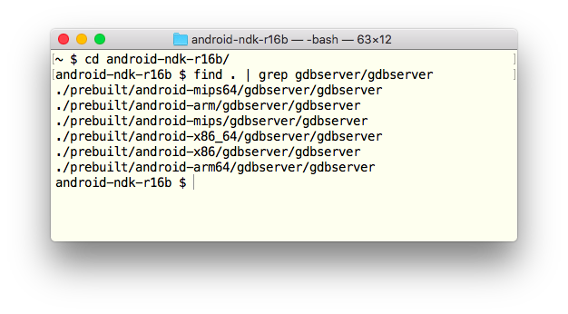
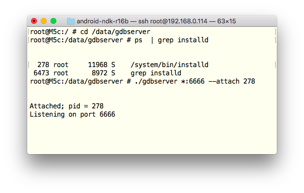

Debugging third-party machine code in Android
It’s a very simple guide, it can be “compressed” to a single sentence:
Copy
gdbserverfrom Android NDK to a rooted Android device via SSH, attach it to a running process and enjoy remote debugging with GDB.
If it’s enough for you, just stop reading this and start debugging. If you need more details, read the guide below :)
Prerequisites
This is what we need to start:
A rooted Android device. To be more precisely, we need a device running Android of version 5 or higher. Also,
- BusyBox and SuperSU must be installed and work properly,
adb shell sumust give us a root shell#.
Other rooted Android features, e.g. running
adbdon the device as root, are not really necessary.We need a Mac with the latest OS X.
Note! gdb and gdbserver are also available for Windows and Linux, so the guide (with some minor changes) is probably applicable to Windows and Linux as well. ★
Preparations
Preparations are easy, just three simple steps:
First of all, we install SSHDroid on the Android device, run the app, allow root access and test SSH connection from the Mac to the device.
Then, if the latest Android NDK is not installed on the Mac, we install it. We need it to get
gdbserverfor our Android CPU architecture and bitwise. Usually, it’s located in<Android NDK directory>/prebuilt/android-<architecture and bitwise>/gdbserver/:
E.g. for Android device with AMR64 processor, we choose
<Android NDK directory>/prebuilt/android-amr64/gdbserver/gdbserver.Finally, we use
scpto copygdbserverto/data/gdbserver/on the Android device (if/data/gdbserver/does not exist, create it with SSH). We placegdbserverunder/databecause/datais writable on almost all Android devices, even ifadbddoes not run as root andadb rootfails with “adbd cannot run as root in production builds” message.
That’s it.
It’s all ready
Let’s connect GDB to an Android demon, for example, to installd:
Connect the Mac and Android device to the same WiFi network
On the Mac, SSH the Android device and find the demon we want to debug (for example,
installd) withpscommand, then go to/data/gdbserverand run./gdbserver *:6666 --attach <PID of installd>. In my console it looks like
On the Mac, run
gdb(on OS X, it’s located in<Android NDK directory>/prebuilt/darwin-x86_64/bin/gdb) and executetarget remote <the Android device IP>:6666in GDB console. As result, we get something similar to
In the same way, we can debug native code from .so libs of running Android applications.
Wanna say something?
Commenting is not available in this blog, but you can write me a letter or message.
Prev: A brief C/C++ how-to-start guide for jailbroken iOS devicesNext: Debugging third-party Android Java code on OS X